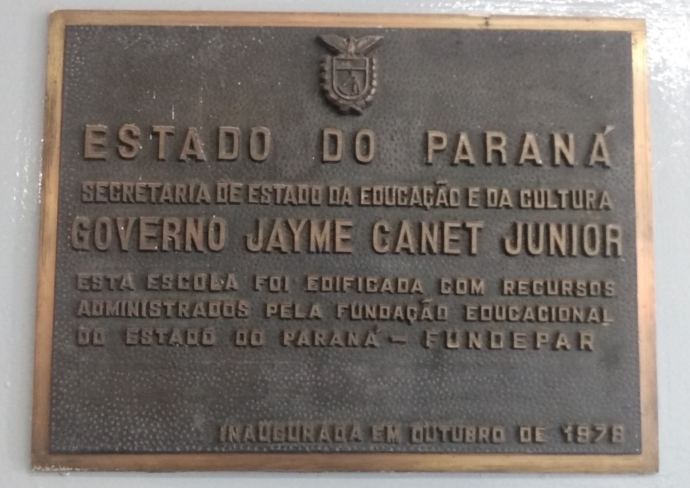

Colégio Estadual Igléa Grollmann O Colégio pertenceu ao complexo escolar Maria Luzia orieta Negrão - ensino de 1° e 2° graus, resultante da reorganização do grupo escolar Vicente Machado e da nova unidade denominada unidade polo. Em decorrência destes atos os estabelecimento de ensino passaram a denominar-se escola Vicente Machado - ensino de 1° grau, atendendo as quatro séries iniciais e Escola Igléa Grollmann - ensino de 1°grau, atendendo as séries finais. A partir de 1983 esse estabelecimento de ensino passou a denominar-se Colégio Estadual Igléa Grollmann - ensino de 1° e 2° graus. No ano de 1993 passou a atender o ensino especial. Com as mudanças ocorridas através da nova lei de diretrizes e bases a partir de 1997 começou o estudo de uma nova proposta curricular que correspondesse às exigências do mundo atual e após várias reuniões pedagógicas leitura e estudos dos parâmetros curriculares nacionais, elaborou-se uma proposta curricular para o ensino
Turma da Tarde
| Turma | Periodo |
|---|---|
| 6° A | Vespertino |
| 6° B | Vespertino |
| 6° C | Vespertino |
| 6° D | Vespertino |
| 7° A | Vespertino |
| 7° B | Vespertino |
| 7° C | Vespertino |
| 7° D | Vespertino |
| 8° E | Vespertino |
Turmas da Manhã
| Turma | Período |
|---|---|
| 8° A | Manhã |
| 8° B | Manhã |
| 8° C | Manhã |
| 8° D | Manhã |
| 9° A | Manhã |
| 9° B | Manhã |
| 9° C | Manhã |
| 9° D | Manhã |
| 1° A | Manhã |
| 1° B | Manhã |
| 1° C | Manhã |
| 1° D | Manhã |
| 2° A | Manhã |
| 2° B | Manhã |
| 2° C | Manhã |
| 2° D | Manhã |
| 3° A | Manhã | 3° B | Manhã | 3° C | Manhã |
Cristina Aparecida Silva dos Santos
Valquiria
| Tarde | Manhã |
|---|---|
| 261 | 653 |
Introdução O existencialismo é uma corrente filosófica e movimento intelectual que surgiu em meados do século XIX na França, a partir das ideias do filósofo dinamarquês Soren Kierkegaard. O apogeu do existencialismo aconteceu na década de 1950, também na França, com a publicação dos trabalhos de Heidegger e Sartre. Na filosofia existencialista, como o próprio nome diz, a existência humana é vista como o principal objeto dos pensamentos e teorias. A partir da existência, os filósofos afirmam que o homem existe independente de qual quer outra definição, ou seja, a existência já basta para que o homem exista por completo, não é necessário nenhum outro elemento que a comprove. A liberdade de escolhas que cada indivíduo possui serve para a construção das essências individuais de cada um. A liberdade de escolha é vista pelos existencialistas como sendo um fenômeno gerador, pois ninguém além do próprio indivíduo é responsável pelo fracasso ou sucesso.
 Link para imagem
Link para imagem
 Link para imagem
Link para imagem
Você gostou do Trabalho?
Sim NãoTurma:1° B